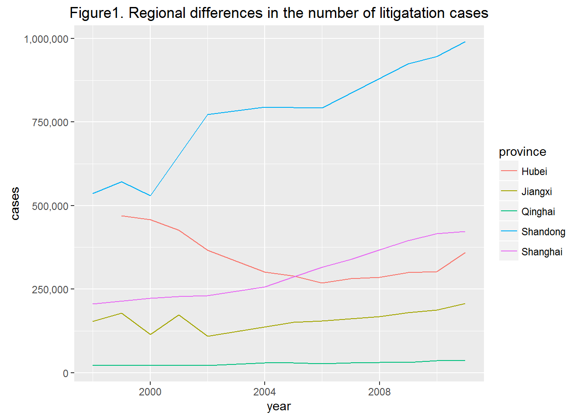

- Reasons behind choosing litigation as a conflict resoultion method
Research Question
In People’s Republic of China (PRC), after witnessing the turmoil derived from the rule of man, post-Mao elites took a step toward legal reforms. In 1982, the PRC constitution stipulated that ‘no organization or individual may enjoy the privilege of being above the Constitution and the law’. Furthermore, in the mid-90’s, the Chinese Communist Party (CCP) officially endorsed the concept of rule of law: rule the country in accordance with law, establish a socialist rule of law state. In 2016, it has been over 30 years since the PRC declared the legal reform. The growing level of litigation seems to imply that law has become established as a social norm, and there are some important roles that law plays in this country.
However, although the total number of cases is growing each year, the regional discrepancies in the number of cases vary among different provinces. As can be seen from the Figure 1 and Figure 2, not only the absolute number of cases but also the yearly rate of change in litigation varies among different provinces. Under the same constitution, and the same declaration of the rule of law, why is it that in some places people are more willing to litigate than the others? In the existing studies, this phenomenon has been mostly explained by the different amount of demands for law among different provinces. Nevertheless, the establishment of the rule of law can also be understood as the central government’s strategy for regime stability maintenance. In other words, the regional variance in the degree of the settlement of the legal culture can be understood from a political perspective.

Legal Reform in China
China’s legal reform has been done in three aspects: legislation, institution building, and legal dissemination. The first step for the legal reform started with passing laws. Between 1976 and 1998, the National People’s Congress (NPC) and its Standing Committee passed more than 337 laws, making a strike contrast to 134 laws, within which 23 were remain valid, passed between 1949 and 1978. The most exemplary legislations include Administration Litigation Act in 1989, Labor Law in 1994, and the Labor Union Act in 2002. Other than providing laws necessary for the society, the Ministry of Justice was re-established in 1979 and law schools were re-opened. In addition, since law is a relatively new concept for the Chinese people, efforts are being made to publicize laws, such as broadcasting programs on case-discussion.
One of the most important goals of such a series of legal reform is to establish law as the criteria for justice in everyday life. Before the legal reform, there was no objective criteria for judging what is right and what is wrong, so people relied on the rule of man. Needless to say that during Mao’s period people suffered from arbitrary party rules accusing them of being reactionary without concrete basis. Other than this extreme example, letters and visits (xinfang) has been adopted as a major conflict resolution method for Chinese people since 1951, and it relies on the local governmental official’s personal judgements and arbitrations about certain case. Although these days xinfang is less being used by Chinese people, another serious alternative has appeared - popular protests. Popular protests are being held mainly because there are no appropriate laws protecting, for example, laborers or residents from the high-handedness of companies or from the local governments.
Under such a circumstance, establishing law and order will be beneficial for the central government for three reasons. First, since Deng Xiaoping, Chinese elites started to recognize the limitations of arbitrary and forceful methods employed throughout Mao’s period in governing the society, and to find kinder and gentler systems for maintaining order more efficient and desirable. Establishing law and order suits well to the changed strategy. Second, in order for the economic reform to be successful, China had to accelerate economic activities by providing objective procedures and regulations in economic transactions. In addition, in order to facilitate foreign investments, China’s legal system had to satisfy the global standard. Last, popular protests are becoming regime threatening because it is mostly against the governments, violent, and growing in frequency and in the number of participants. In order to undercut the popular protests, turning them into regularized litigation will be necessary. When considering that the first and third reasons directly related to ordering society and the second reason to the legitimacy, it can be inferred that the ultimate reason for the central government to establish law as the criteria for justice is to maintain regime stability.